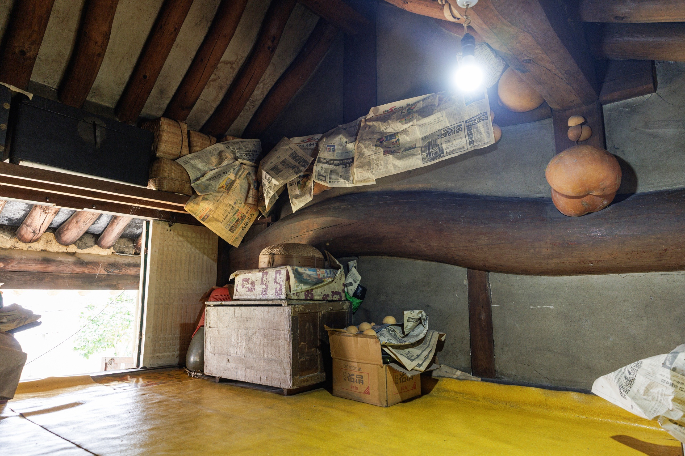
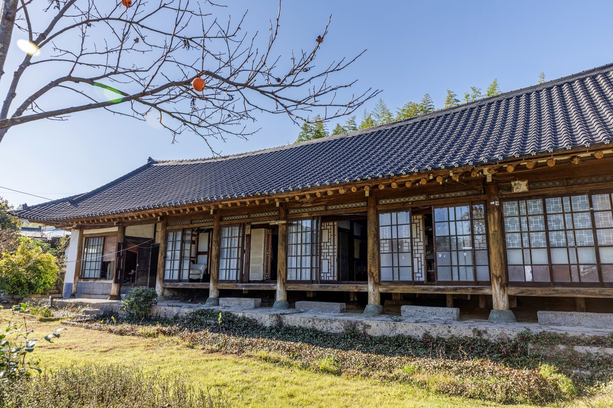
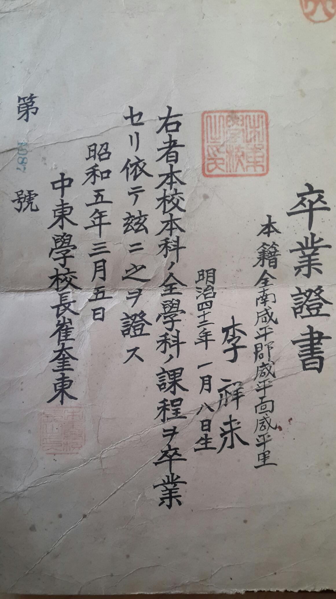
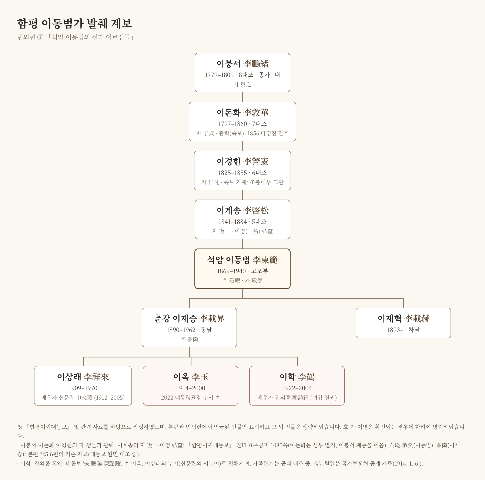
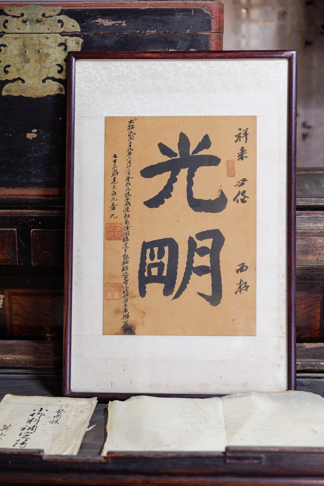

함평 이동범가, 128년의 인연
『백범일지』의 한 대목에서 시작한 가족사 조사 기록 · 전 10편과 번외편 3편
1898년, 인천감옥을 탈옥한 청년 김구 선생이 전남 함평의 ‘이 진사’ 댁에서 약 보름을 머물렀습니다. 그 집이 저희 고조부 석암 이동범(石庵 李東範, 1869~1940) 선생의 집이라는 이야기는 『백범일지』와 가족의 기억으로 오늘까지 전해져 왔습니다.
이 아카이브는 2026년 백범김구기념관에서 아버지의 인터뷰를 진행해 주신 것을 계기로, 문헌과 가족 소장자료, 후손의 증언을 하나씩 대조하며 정리한 연재 1~10편과 번외편 3편을 한곳에 모은 것입니다. 기록으로 확인되는 사실과 가족 전승, 그리고 아직 밝혀지지 않은 조사 과제를 구분해 적었습니다.

잠시 숨을 고르며 — 열 편의 기록을 마친 뒤
1~10편을 마치고 잠시 숨을 고르는 연재 안내. 지난 글의 점검 계획과, ‘인물과 사료’에서 ‘삶과 기억’으로 넘어갈 제2부 예고를 담았습니다.
연재 목차
 제1편
제1편‘이 진사’는 누구였나 — 백범 김구와 함평 이동범가
『백범일지』에 등장하는 ‘함평 이 진사’와 고조부 석암 이동범(1869~1940), 1898년 청년 김구의 보름 체류, 1917년 『매일신보』 기사, 1947년 「光明」 휘호까지의 첫 정리.

제2편보름을 머문 이유 — 1898년, 함평의 은신
하룻밤이 보름이 된 이유. 『백범일지』에 남은 주인과 손님을 차별하지 않은 가풍, 육모정·토굴·다락방 전승과 1898년 공간·현존 건물을 구분해야 하는 이유.
 제3편
제3편1946년 재회와 光明 — 김구가 다시 찾은 인연
1946년 9월 김구가 옛 은인의 집을 나주로 잘못 기억한 채 찾으려 했고, 이재승·이재혁 형제가 서울로 찾아뵈었다. 1947년 「光明」 휘호의 명문과 날짜를 검토한 편.
 제4편
제4편종가와 이재혁 가옥 — 두 집에 남은 128년
장남 이재승 계통의 현존 종가와 차남 이재혁 가옥(2004년 전라남도 문화유산)의 관계를 2003년 조사보고서와 대조. 1898년 체류 공간과 현존 건물의 구분, 함평군 현지조사 요청까지.
 제5편
제5편석암 이동범 — ‘이 진사’의 생애
‘이 진사’로만 알려져 있던 고조부 석암 이동범(1869~1940)의 생애. 1899년 『황성신문』의 도장 분실 광고, 1917년 『매일신보』 인물 기사, 대한제국 『관보』와 2003년 조사보고서로 관력·귀향·고향에서의 일을 따라간 편.
 제6편
제6편춘강 이재승 — 종가를 이은 장남
1898년 이 진사 댁에서 글을 배우던 형제의 한 사람이 반세기 뒤 김구 선생을 찾아간 두 형제의 한 사람이기도 하다 — 1917년 『매일신보』의 ‘장자 재승 군’, 1923년 함평흥산조합 정기총회와 민립대학설립운동 함평군부 보관위원, 1925년 함평흥산주식회사 상담역, 1938년 「古道에 充實 春崗 李載昇氏」 기사로 따라간 증조부 춘강 이재승(1890~1962)의 생애.

제7편이상래 — 「光明」에 이름이 남은 손자
할아버지 이상래(1909~1970)의 삶을 중동학교 졸업증서, 해금강 기념사진, 여동생 이학의 회고록 『황진이가 되고 싶었던 여인』, 「光明」 휘호의 ‘祥來’ 두 글자로 따라간 편. 일제 말 공출과 경찰 연행, 1947년 휘호에 손자 이름이 남은 경위까지.
 제8편
제8편신문란 — 1930년 무렵, 학교를 떠난 며느리
할아버지 이상래의 아내이자 종가의 며느리로 시집온 신문란(1912~2005) 여사의 삶을 혼례 사진, 이재승 가족사진, 광주여고보 단체 사진과 1920년대 말 탑골공원 독사진으로 따라간 편. 광주여고보 재학과 1929년 광주학생독립운동, 1930년 무렵 학교를 떠났다고 전하는 경위, 시누이로 전해지는 이옥 선생의 공식 기록과 남은 질문까지.
 제9편
제9편지도에 남은 이름 — 기각리 원도 속 ‘李載昇’
『咸平郡咸平面箕閣里原圖 二十二枚之內 第九號』 지적원도에서 증조부 춘강 이재승의 이름 ‘李載昇’을 찾아 읽은 편. 자료를 토지대장으로 잘못 분류했다가 지적원도로 바로잡은 과정, 김희태 연구자의 1917년 함평 경관 연구, 가족 전승으로 남은 무안 땅 이야기까지. 필지번호와 현재 위치는 특정하지 않았습니다.
 제10편
제10편3천 석은 어디로 갔을까 — 기록이 말하는 것과 말하지 않는 것
‘3천 석의 부호’라는 후대 기록과 1909년 나주경찰서 보고에 남은 의병 측의 군수금 1만 원 요구 전령을 출발점으로, 이동범가의 재산이 지나온 길을 묻는 편. 요구 기록은 실제 지급을 증명하지 않으며, 공출·농지개혁·전쟁은 일반 역사 배경으로, 집안의 재산 변화는 가족의 짐작으로 구분해 적었습니다.
번외편

번외편 ①석암 이동범의 선대 어르신들
『함평이씨대동보』 1080쪽으로 확인한 선대 계보 — 8대조 이붕서부터 5대조 이계송까지, 족보와 ‘李公弘奎’ 비석에 남은 관직 기록, 무안 운남면의 묘소, 그리고 아직 대조하지 못한 교지와 묘비명.
 번외편 ②
번외편 ②석암 이동범가의 여성들
광주여고보에 함께 다닌 이옥·이학 자매와 할머니 신문란 여사 — 1930년 『조선일보』 퇴학 명단과 학적부, 2022년 대통령표창, 그리고 회고록을 남긴 이학 여사의 삶.

번외편 ③128년의 인연, 기록은 계속됩니다 — 함평 이동범가와 백범 김구
1898년 함평의 보름부터 1947년 「光明」까지 — 열 편의 본편과 두 편의 번외편에서 확인한 것, 바로잡은 것, 아직 답하지 못한 질문을 한 번에 돌아보는 최종편.
한눈에 보는 자료
- 원문 연재(네이버 블로그): 제1편 · 제2편 · 제3편 · 제4편 · 제5편 · 제6편 · 제7편 · 제8편 · 제9편 · 제10편 · 블로그 전체
- 게시판 「128년의 기록과 보도」: 연표 · 기록 001 · 기록 002 · 기록 008 · 기록 009 · 기록 011 · 기록 023 · 기록 024 · 기록 026 · 네이버 연표 원문
- 번외편 원문: 번외편 ① · 번외편 ② · 번외편 ③
- 공개 채널: X @hp_db_archive · Threads @hp_db_archive
- 백범김구기념관 공식 인터뷰 영상: https://www.youtube.com/watch?v=NZlIOjAmNzg
- 전문·요약을 AI가 읽기 좋은 형태로: llms.txt · llms-full.txt